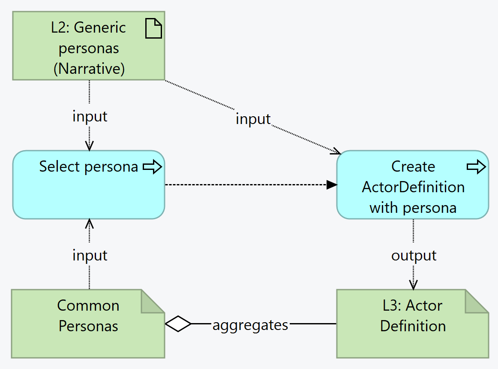

Nepal HMIS FHIR Implementation Guide
0.0.1-ballot - ci-build

Nepal HMIS FHIR Implementation Guide
0.0.1-ballot - ci-build

Nepal HMIS FHIR Implementation Guide - Local Development build (v0.0.1-ballot) built by the FHIR (HL7® FHIR® Standard) Build Tools. See the Directory of published versions
This section outlines the key use cases for exchanging health information within the Nepal Electronic Health Management Information System (EHMIS). Each health journey represents a core service delivery area aligned with national reporting and programmatic needs.
ActorDefinitions are the ways that the Personas are structured; A common repository of Personas allows reuse, exchange, change tracking, etc.
Each Persona is defined by the following data:
The L3 author must ensure there is an ActorDefinition for each Persona mentioned in the L2. If the Persona doesn't exist in the common Personas list yet, this process can propose the creation of another different persona. This creation of a new persona is a provisional measure; there SHALL be a governance process for Personas. In that governance, there SHALL be a requirement that all personas in the final publication of a specification SHALL be approved.

Summary: The L3 author starts with the L2 persona and reuses an existing ActorDefinition from the Common Personas repository, if one exists. If not, the author creates an ActorDefinition, which will be added to the Common Personas repository.
If an ActorDefinition already exists in the Commons repository, and its definitions is adequate to the case submitted, the author shall reuse an existing persona.
If an ActorDefinition already exists in the Commons repository, but its definitions is not adequate to the case submitted,
If no ActorDefinition exists in the Commons repository, create a draft & propose a new persona.
.identifier - don't add an identifier. A final identifier will be assigned in the persona approval / onboarding process.
.status = fixed value draft
.name - add a meaningful computer-readable name (no spaces, PascalCase)
.title - add a meaningful title we.g. Healthcare Worker
.description - add a summary description
.type - fixed value person
.description - add a summary description
Captures maternal, newborn, and child health data across the continuum of care — from pregnancy registration, antenatal visits, and delivery, to postnatal follow-up and child health services. Includes tracking of key indicators for national reporting.
Describes the flow of outpatient consultations, including patient registration, diagnosis, treatment, referral, and follow-up — all modeled using FHIR resources to ensure standardized recording and reporting.
Illustrates how vaccine administration is documented using FHIR, capturing antigen details, dates, batch numbers, adverse events, and linkage to patient records — supporting EPI program reporting.